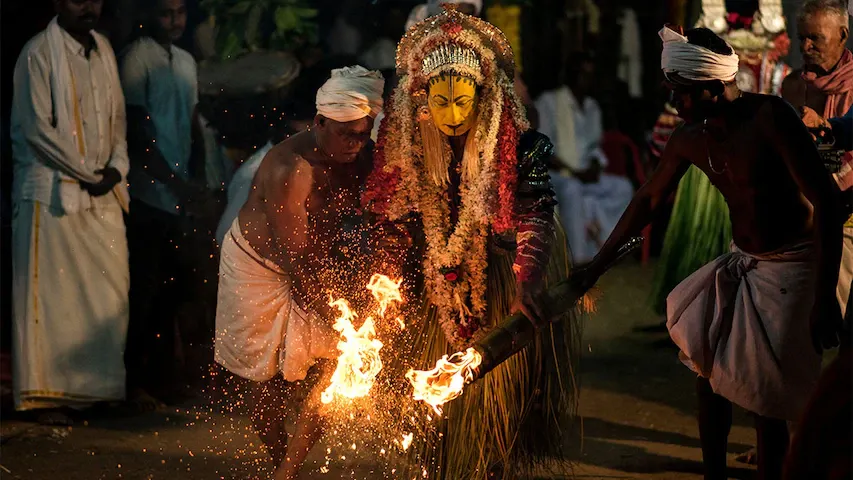
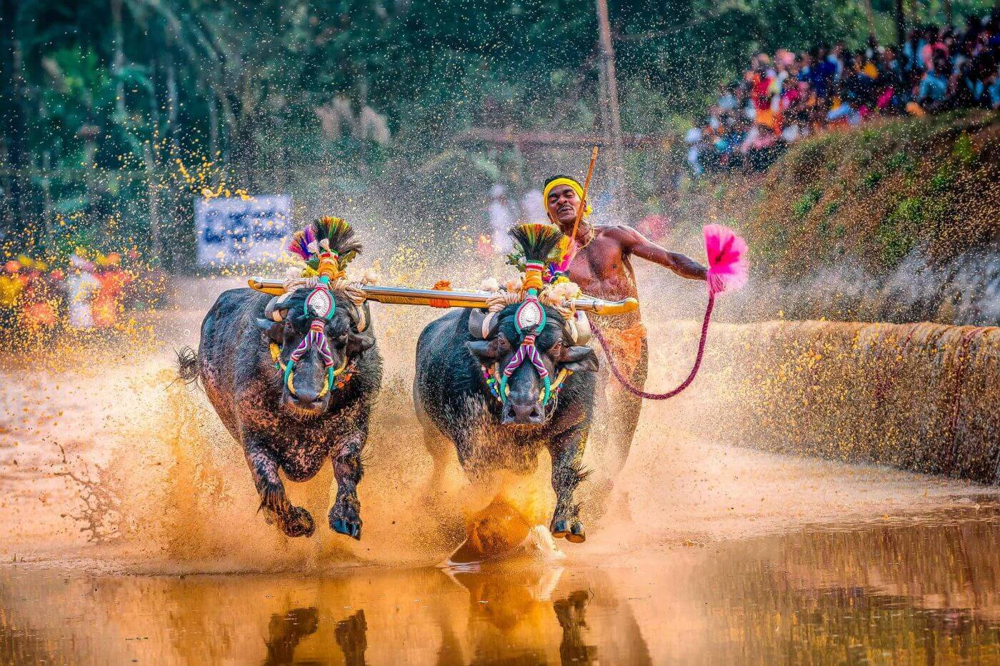
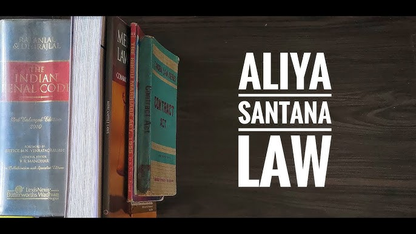
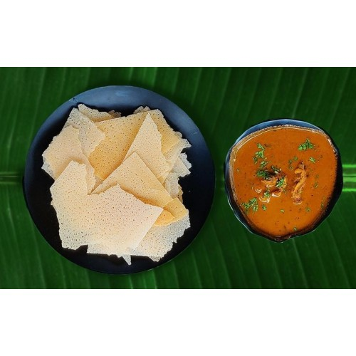
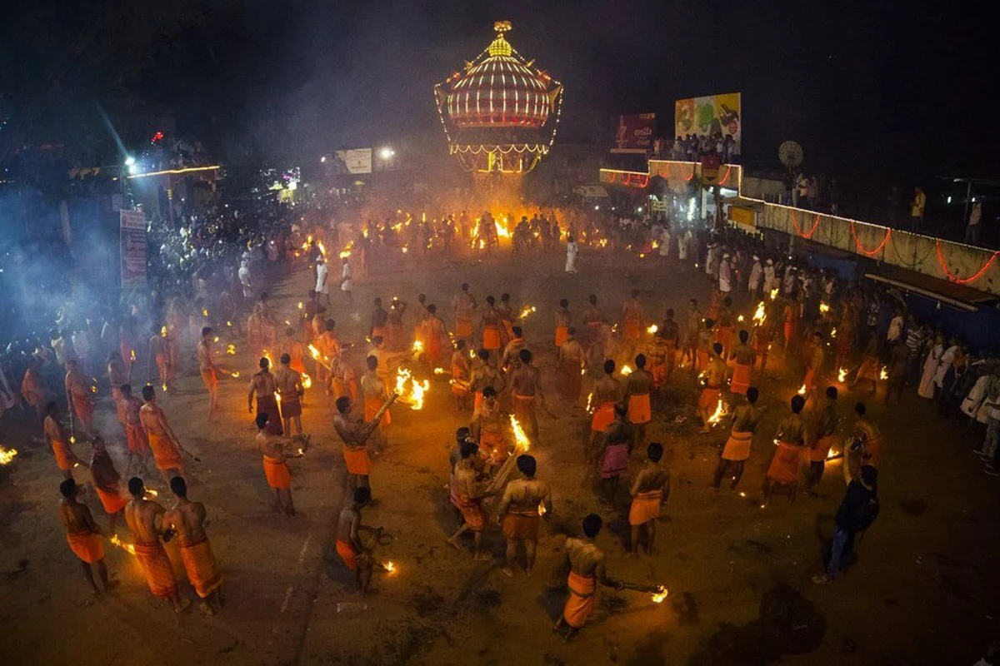

ತುಳು ನಾಡ್Coastal Karnataka & Kerala
Learn Tulu, one word at a time.
A free course in the language of India's south-western coast, spoken at Bhoota Kola rituals, at Kambala races, and in every kitchen making neer dosa.
- speakers
- 2.5M+
- ruling eras
- 6
- scripts
- 2
Tulu has been spoken along this coast for centuries. This is a calm, free place to start learning it, for kids, parents, grandparents and anyone curious.
-
01
Listen first
Every word comes with a recording from a native speaker, so you learn how it really sounds.
-
02
Practise in short rounds
Matching games and quick quizzes, a few minutes at a time.
-
03
Read the script and the stories
Learn Tulu Lipi letter by letter, and the traditions the language carries.
The course
From your first hello to old inscriptions.
Four units, each built from short lessons. Open any lesson to see the words it covers and where they come from.
More units are on the way.
The language
A Dravidian language with its own voice.
Tulu belongs to the South Dravidian family, related to Kannada, Malayalam and Tamil, but with its own grammar, vocabulary and, historically, its own script.
The Tigalari script
For centuries Tulu was written in Tigalari, a script closely related to Malayalam's, used across the coast for Sanskrit manuscripts as well as Tulu itself.
Read more 02Tulu Mahabharato
Composed by the poet Arunabja around the 15th century, this is the oldest substantial work of Tulu literature known to survive.
Read more 03The Paddana tradition
Alongside written literature, Tulu carried sung oral epics called Paddanas, performed during Bhoota Kola rituals by hereditary singers.
Read more 04Kannada script today
As printing spread, Tulu came to be written mainly in the Kannada script, the convention most widely used for the language today.
Read more 05An active revival
Universities, the Tulu Sahitya Academy and community groups now document Tulu, teach the Tigalari script, and campaign for formal recognition.
Read more 06Two related tongues
Tulu is often discussed alongside Kannada and Malayalam, its closest neighbours, yet it is its own language, not a dialect.
Read moreA first word
ನಮಸ್ಕಾರ
namaskāra
Hello. The polite way to greet someone in Tulu, said with folded hands. It's the first word in Unit 1, and a good one to try on a grandparent today.
The land
Tulu Nadu, the land of the Tulu people.
It stretches along the coast through Dakshina Kannada and the coastal strip of Uttara Kannada up to Gokarna. Tulu is spoken south of the Kalyanpur river; north of it, Kannada takes over.
- Historic name
- Alvakheda
- River boundary
- Kalyanpur
- Today
- Dakshina Kannada, Udupi & Kasaragod
Six eras of Tulu Nadu
- 1
The Alupa period
For centuries the Alupa (Aluva) dynasty ruled the coast from near present-day Mangalore, shaping the region's earliest distinct identity.
- 2
The Rayas of Vijayanagara
Tulu Nadu later came under the Vijayanagara Empire, whose rulers left their mark on temples and regional governance.
- 3
The Nayaks of Keladi
The Keladi Nayaks then held sway over the coast, continuing patterns of temple patronage and local rule.
- 4
The Sultans of Mysore
Control passed to the Sultans of Mysore, a turbulent chapter that reshaped power across the Kannada- and Tulu-speaking regions.
- 5
The British period
Colonial administration organised the coast into South Canara district, a boundary that still roughly shapes the Tulu-speaking region.
- 6
Post-Independence
After 1947 the region was eventually split between Karnataka and Kerala, the same line that divides Tulu Nadu today.
The culture
Kept in kitchens and festivals, not museums.
In Tulu Nadu, culture flavours the food, fills the festival calendar and shapes everyday family life. Eight places to start.

Bhoota Kola
A spirit-possession ritual: a performer channels a deity or ancestral spirit and speaks to the community.
Read more
Nagaradhane
Serpent worship honouring deities believed to protect the land, central to Nagapanchami.
Read more
Kambala
The buffalo race, first run after the rice harvest through flooded paddy fields.
Read more
Aliyasantana
A matrilineal inheritance system, where property passed through the female line.
Read more
Everyday cuisine
Neer dosa, Mangalore buns and kori rotti, rooted in coastal and farming tradition.
Read more
Festivals
Dasara and the Tulu New Year fill the streets with dance, music and celebration.
Read moreYakshagana
The coast's all-night dance-drama of epic stories, towering headdresses and drums.
Read morePili Nalike
The tiger dance: painted troupes leaping to taase drums during Dasara.
Read moreBeyond the course
Tools for reading and writing Tulu.
Learn the script, look up a word, or type Tulu in its own letters. All free, no sign-up.
Learn Tulu Lipi
Every Tigalari letter with its Kannada twin, plus tracing and a quiz.
Transliterator
Type in English letters or Kannada and get Tulu Lipi instantly.
Tulu Lipi keyboard
Tap out words letter by letter and copy them anywhere.
Dictionary
Search Tulu and English across greetings, numbers, family and market words.
Words & phrases
Flashcards with native-speaker audio, sorted by topic.
Suggest a word
Speak Tulu? Send new words and corrections straight to the course.
Learning together
This week's learners.
Earn points for lessons, streaks and pronunciation practice. Create a free account to save your progress and join the board.
Create a free accountGood questions
Frequently asked.
Something missing? Send us a note.
What is Tulu?
Tulu is a South Dravidian language spoken along the coast of Karnataka and in northern Kerala, mainly in Dakshina Kannada, Udupi and Kasaragod. It's related to Kannada, Malayalam and Tamil, but it's a separate language with its own grammar, vocabulary and literature. How it compares.
Is learning Tulu here really free?
Yes. Every lesson, game, culture page and tool is free. You only need an account if you want your progress saved to the dashboard.
Do I need to know Kannada first?
No. The course teaches Tulu in English letters, so you can start speaking straight away. Knowing Kannada helps if you want to read: Tulu is usually written in Kannada script today, and each Tulu Lipi letter has a Kannada twin.
What is Tulu Lipi (the Tigalari script)?
Tulu Lipi, also called Tigalari, is the traditional script of Tulu. For centuries it was used along the coast on palm-leaf manuscripts, and it's closely related to the Malayalam script. It became part of the Unicode standard in 2024, and our Tulu Lipi page teaches every letter with tracing practice and a quiz.
How do I type Tulu Lipi?
Use the transliterator: type Tulu in English letters (like namaskAra) or in Kannada, and it gives you Tulu Lipi to copy. There's also an on-screen Tulu Lipi keyboard. Because the script is so new to Unicode, some devices still need a Tulu-Tigalari font installed to display it.
What's the difference between transliteration and translation?
Transliteration changes the script but keeps the words: neer becomes ನೀರ್ in Kannada letters, but it's still the Tulu word for water. Translation changes the language, from Tulu neer to English "water". For translations, search the dictionary.
Why is a word spelled differently from how my family says it?
Tulu varies a lot from place to place and between communities, and there's no single "correct" spelling in English letters. If your version is missing, please suggest it and tell us where it's used.
How can I help?
If you speak Tulu, send us words, corrections or feedback. Native-speaker recordings for the flashcards are especially welcome.